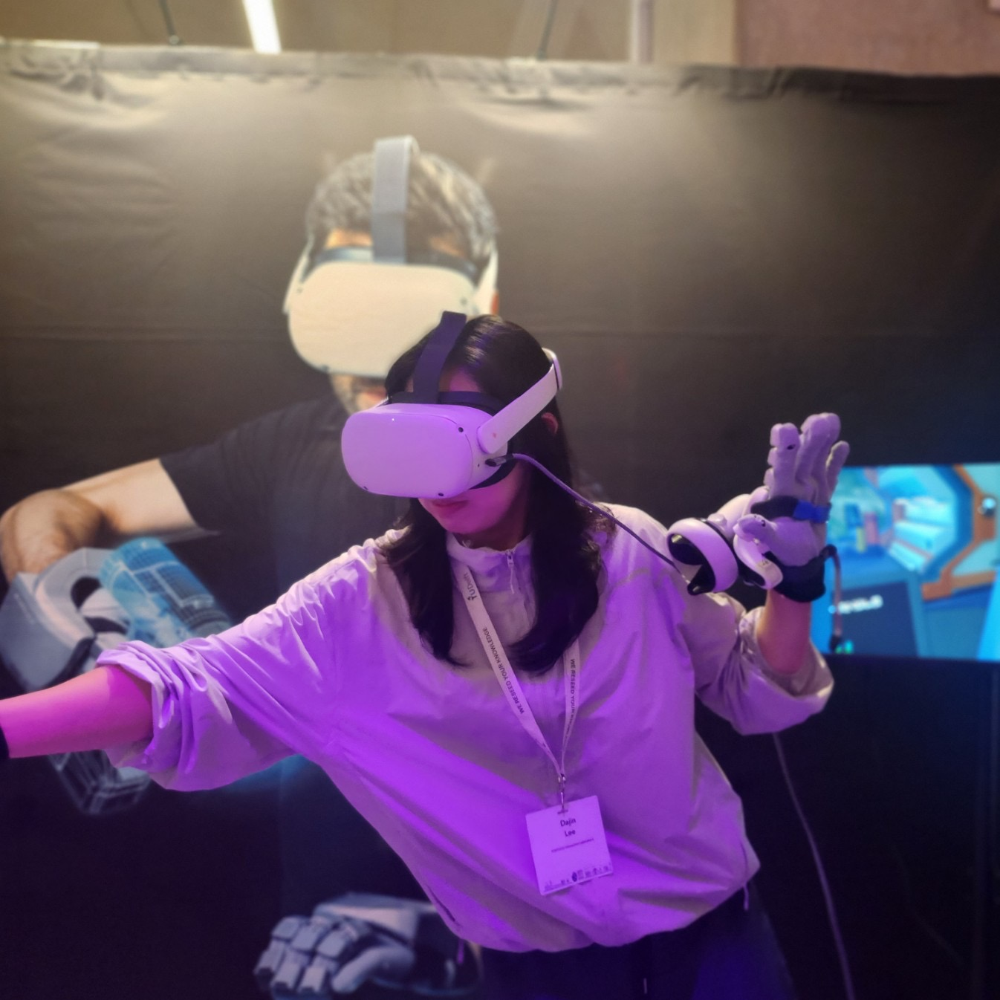

Dajin Lee, Ph.D. Candidate

Hello! I am a Ph.D. candidate in the Interaction Laboratory at POSTECH, expecting to graduate in February 2027.
I study how people perceive and use physical and multisensory interfaces. My research combines physical prototyping with quantitative and qualitative user studies to inform haptic feedback design, comfort, and usability.
My work spans spatial audio-tactile rendering, wearable haptics, and embodied learning. I also develop evaluation frameworks for multimodal experiences, including PRISM for music previews, to examine user experience, interaction effort, decision quality, and exploration.
I am currently a Visiting Graduate Researcher at the University of Waterloo (June-November 2026), working with Prof. Oliver Schneider on user intent estimation and haptic rendering for shared control in robotic grasping.
I am seeking research positions starting in 2027 in haptics, human-computer interaction, and human factors, including industry research and postdoctoral opportunities. Please get in touch to discuss potential roles or collaborations.
Haptic Perception & Rendering
- HAPTCHA: Eyes-Free Haptic CAPTCHA in Mobile Environments: Design Principle, Security Evaluation, and User Experience (UIST'26)
Paper
- Spatial Tactile Optimizer: Toward Perceptual Optimization for Multi-Point Vibrotactile Cues on the Torso (CHI 2026 Extended Abstract)
Paper
- Discomfort Analysis from Steering Wheel Vibration (HS'26)
Paper
- Effects of Contact Force Across Upper Body (TOH'24a)
Paper
- Heart Activity Modulation Using Haptic Biofeedback (UIST'24)
Paper
- Body-Penetrating Phantom Sensation on Feet (WHC'21)
Paper
Multisensory Integration of Sound and Touch
- Spatial Audio-Tactile Alignment for Directional Cueing (TVCG'25)
Paper
- Modulating Body-Penetrating Tactile Sensation Using Sound (WHC'25)
Paper
- Evaluating Sound-Driven Haptic Systems with Deaf and Hard-of-Hearing Users (Under review)
- Perceptual Effects of Co-Located Vibrotactile and Auditory Cues on the Head (Under review)
Human-Computer Interaction and Qualitative Analysis
- Multimodal Music Previews: PRISM, a Framework for Evaluating Experience and Decision-Making (Under review)
- Contextual Analysis of Social Touch (CHI 2026)
Paper
- Embodied and Tangible Learning for Children (IJHCS'25)
Paper
- Haptic Exhibit for Learning Physics (TOH'24b)
Paper
- Participatory Design for Vibrotactile Warning (Eurohaptics'24)
Paper